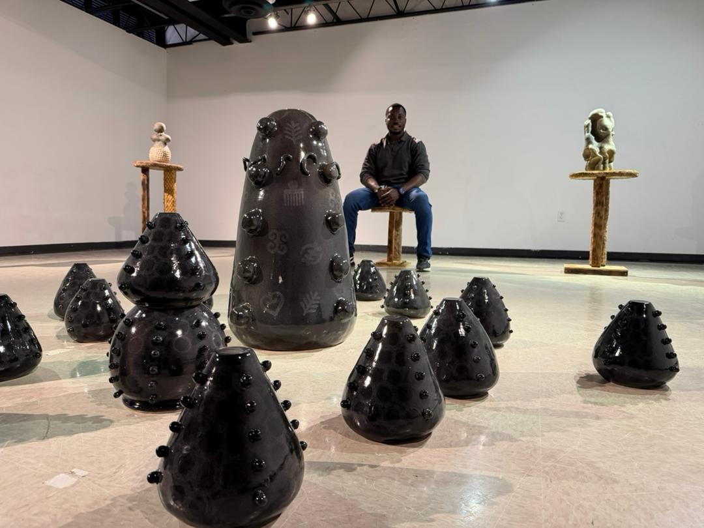

My work recontextualizes traditional vessels and cultural elements into sculptural forms that tell stories of migration, labor and belonging. As a Ghanaian immigrant artist living in the United States, I draw from African aesthetics such as, Adinkra symbols, kente patterns, scarification, traditional pots and the architecture of mud houses to ground my work in the visual language. I reflect on the physical and emotional labor of living in a place where millions aspire to come for a better life. The gestures within my forms represent the interactions of people from diverse cultures negotiating space and identity. For me, the surface of each piece is not merely texture; it embodies the beauty of people moving, building and striving the transition from the known to the unknown, the work of survival and the passage of time that ensures you never return as the same person who left. This became personal when I visited home for the first time after leaving. After just a year away from the place where I had lived for 29 years, I felt like an alien in my own land. That experience of distance, return and disorientation deeply informs the stories I shape in clay. My process is tied to movement as well. Clay, a material I have worked with for most of my life. Before every journey, one object remains constant, the bag. I use it as a symbol of transition, memory and the weight we carry. Its folds inspired the folds works. I do not restrict myself to a single building technique instead, I allow the process to reveal the unpredictability of the folds, shifts and movements which echo themes of flexibility, struggle and adapting to the unknown that comes with migration. I also draw from the culture of used objects and the presence of cats in my life. I incorporate found cat stands as references to both places I have lived: growing up with community cats in Ghana and living in a place where cats become personal companions. Combined with Ghanaian fabrics, these elements create a sense of shared community and invite viewers into the layered spaces of my experience. My works reflects my own journey as a Ghanaian immigrant, intertwining the traditions of home with the experiences of my new life. By blending Ghanaian aesthetics with contemporary forms, I invite viewers to see themselves in these narratives of migration, labor and belonging. Through this, I hope to foster empathy and a deeper understanding, creating a space where personal and collective experiences can resonate and connect.
Contact Philip Djorsu